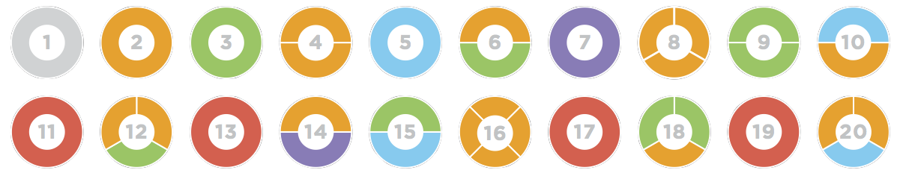

Un múltiplo de un número es el resultado de multiplicar ese número por otro número entero. Por ejemplo, los múltiplos de 3 son 3, 6, 9, 12, 15, etc.
1 Indica cuales de los siguientes números son múltiplos de 9:
2 Indica los 3 primeros múltiplos de 7:
Un divisor de un número es un número que al dividir el primero da como resultado un número entero. Por ejemplo, los divisores de 12 son 1, 2, 3, 4, 6 y 12.
3 Indica cuales de los siguientes números son divisores de 8:
4 Indica 3 divisores de 12:
Un número es divisible por 2 si termina en 0 o en una cifra par (2, 4, 6, 8).
Un número es divisible por 3 si la suma de sus cifras es divisible por 3.
Un número es divisible por 5 si termina en 0 o en 5.
Un número es divisible por 10 si termina en 0.
5 Indica cuales de los siguientes son divisibles entre 2, 3 y 5:
Para calcular los divisores de un número, debes encontrar todos los números enteros que lo dividan sin dejar resto. Por ejemplo, los divisores de 24 son 1, 2, 3, 4, 6, 8, 12, y 24.
6 Calcula todos los divisores de los siguientes números:
Un número primo es un número mayor que 1 que solo tiene dos divisores: 1 y él mismo. Un número compuesto es un número que tiene más de dos divisores. Ejemplos de números primos son 2, 3, 5, 7, 11.
7Indica cuales de los siguientes números son primos y cuales compuestos:
La criba de Eratóstenes es un método antiguo para encontrar números primos eliminando los múltiplos de cada número primo empezando desde 2.
8 Haz la criba de Eratóstenes para calcular los números primos entre 1 y 50.
9 Mira esta imagen. ¿Qué observas? ¿Podrías seguir el patrón?
Descomponer un número en factores primos significa escribir el número como el producto de números primos. Por ejemplo, la descomposición en factores primos de \(12=2^2 \cdot 3\).
9 Descompón en factores primos los siguientes números:
El máximo común divisor (MCD) de dos o más números es el mayor número que los divide a todos exactamente. Por ejemplo, el MCD de 24 y 36 es 12.
10 Calcula el máximo común divisor de los siguientes números calculando los divisores de cada número:
11 Calcula el máximo común divisor de los siguientes números descomponiendo en factores previamente:
El mínimo común múltiplo (MCM) de dos o más números es el menor número que es múltiplo de todos ellos. Por ejemplo, el MCM de 4 y 6 es 12.
12 Calcula el mínimo común múltiplo de los siguientes números calculando los primeros múltiplos de cada número:
13 Calcula el mínimo común múltiplo de los siguientes números descomponiendo en factores previamente: